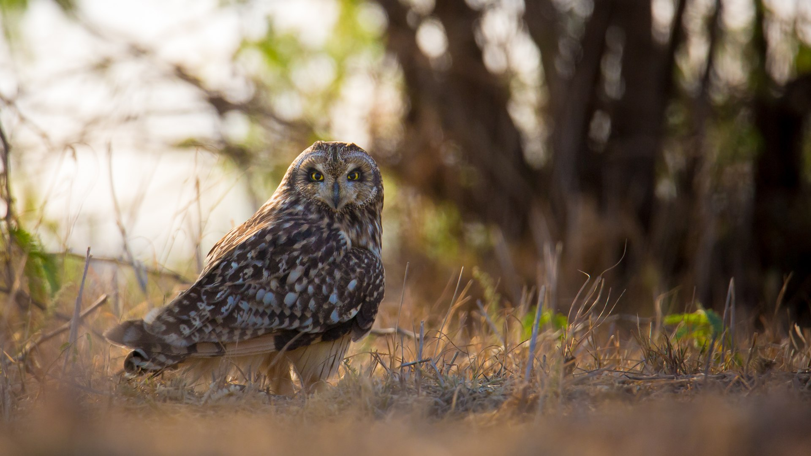

dette er et bilde av en jordugle
de er fine
- Jordugle
- Hubro
- Hornugle
- Snøugle
- Lappugle
- Kattugle
- Spurveugle
- Slagugle
- Haukugle
- Perleugle
ugler som hekker i norge
(det finnes også tårnugler i norge som tidvis besøker sørlandet men dette er utenfor hekkesesongen)
(placeholder tekst + bilde)